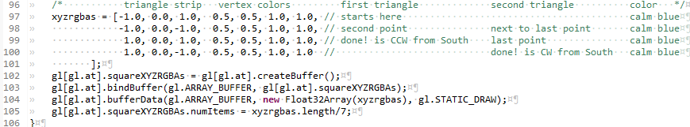
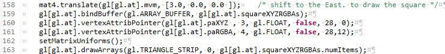

Contents |
Welcome to the second in my series of WebGL Tutorials. These tutorials are based on the well known Learning WebGL series, with this second tutorial being based on the WebGL Lesson2. It shows you how to add color to the shapes we learned to draw on a web page in tutorial01. This and the following tutorials will go over only the things which are new to that tutorial. Color is the thing added in this tutorial
These tutorials are a best match with people who have a reasonable amount of programming experience, but no prior exposure to computer graphics is required. The goal is to get you up and running a working 3D interactive web page as quickly as possible, with a good understanding of what is going on. Writing these tutorials is how I'm learning WebGL myself, so there may well be (and probably are) errors; use at your own risk. However, I'll be fixing bugs and correcting misconceptions when I hear about them, so if you see anything wrong, please let me know in the comments.
The code from webGLTutirial01 is mutated to add color to each vertex.
The nice gradual transitions from one color to another is done by entirely by webGL, and is the default behavior . In the nomenclature of
webGL, each vertex will now have two attributes: position and color.
First impression of this shader might be that it looks rather like the previous shader, rather simple. True.
Line 21 adds our second attribute type variable: aRGBA the leading a is for attribute (something that can change for each vertex)
RGB are Red Green Blue, and A is for the Additoinal Attribute.
Line 26 is new and is our first exposure to a varying variable. These are the way extra data is shared between the vertex shader and revieved by
the fragment shader. There MUST be an identical declare in the fragment shader. the name: vColor is short for vertex Color. It is a vec4 for the
same reason aRGBA is a vec4 (as explained in tutorial01).
Line 31 "deals" with the colors, pretty simply, it hands our attribute off the the varying variable.
Done
Also not much different from our tutorial01 fragment-shader.
Line 29 is our catcher for the line 26 pitcher from the vertex-shader.
Line 42 is where the real work gets done. We just assign the colors which come over with the several vertices in the fragment to pixels in the
fragment. Look up at the triangle and the lines where the colors are blended. All that is done under the covers by the magic provided in the
webGL context. All we have to do is that one little assign in line 42.
Done
The order of the functions in the webGLTutorial02.js has again been left in the same order as their execution order. The .jsp onload
starts us out in webGLStart02() which is identical to it's webGLTutorial01 version.
Second is the customizeGL02(), which has only an additional else clause on the cullface checker, to handle the case where I
forgot to have an id of the right name. When I copied things over to make the second tutorial, I botched it somehow. First thing to check is
setCullface vs setCullFace. Anyway, javascript did, as javascript will. It just halted. Firefox with firebug
saved my sanity by letting me see where the halt was (Download firefox, and do your debug/development programmig against mozilla first)
When you get firefox visible, set it to the console tab and then open your web page. The setCullFace was addes to handle this fail gracefully.
This is unchanged except that in the final block, Lines 64 thru 69, we need to add the buffer location and array enablers for the new RGBA color attribute.
webGLTutorial02.js... initBuffers02()The name of the javascript varialble and the buffer we are settting has expanded to be the position xyz plus the color rgba.
Each line of the four points we are setting for the two lines, the third of which will also be the point), with the cartesian coordinates,
followed by the color Red, Green, Blue, Attribute-1.0.
the first line has it's beginnign and end colors set to be the same color, and the second line has the bottom red (this is the veretx we will nab
to be our point), and the second line end (the top) as green.
The most interesting thing here is that the final three lines did not change at all. There are no refernces to the length of the variables which need to be sent to the graphics engine.
webGLTutorial02.js... initBuffers02()Pretty much the same thing for the 4 vertices which will become the 3 lines, and the first three will be the triangle. Added the numItems
"tack-on" to the buffer.
webGLTutorial02.js... initBuffers02()

The squareXYZRGBA has all of the 4 points for the two triangles with the same color.
and on into the drawScene function
webGLTutorial02.js... drawScene02()

In addition to the now familiar additional line for the aRGBA attribute, there is one trickey bit... the constants in these lines. Notice that
the aXYZ gets 3 floats per XYZ, and that aRGBA gets 4. Notice the second to the last argument on the vertexAttribPointer, 28 is the stride. That is
because the 7 floats per vertex (3 for position plus 4 for color) times 4 bytes per Float32Array member 7*4=28 bytes gets you to the next vertex.
We had set up our vertices with XYZ first (purely arbitrary choice), but after haveing done so, we need to put the offsets to match. The XYZ
is right at the start of the vertex, so the offset=0. The color starts after 3 float32's, (4 bytes each) so the offset for the RGBA is 12.
The user interface is unchanged from WebGLTutorial01.
Adding color was a relatively small modification.